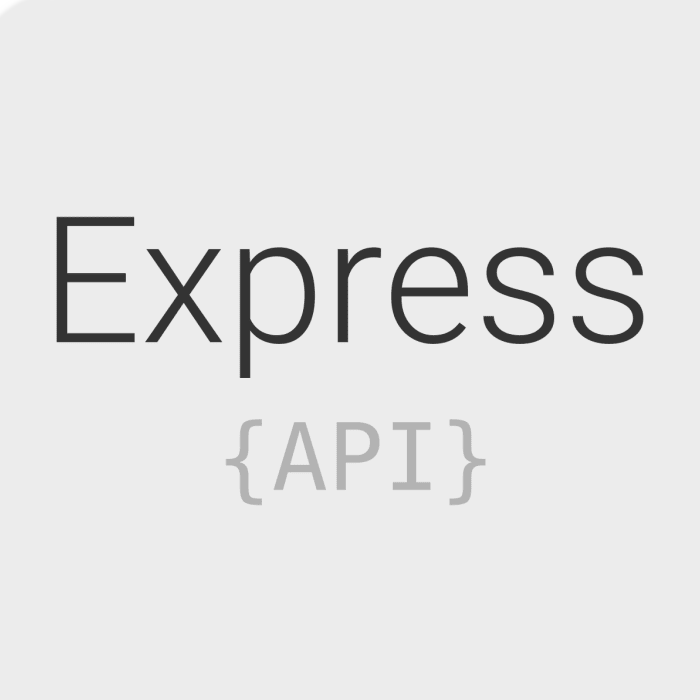
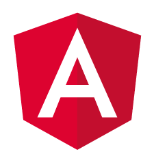

Western Schedule Creator
Web Application to Build your Semester at Western
Technologies Involved
-

-

-

- 
- 
Secure Registration and Login
Users can create an account locally or using Auth0's 3rd party authentication. Western Schedule Creator stores your email address, username, and hashed password. Alternatively, you can use Auth0 to log in via an existing Google Account.
Browse Subjects and Courses
Authenticated and unauthenticated users alike can browse all the subjects adn coruses the Western offers. A plethora of information is available about each course, such as times, location, prerequisite classes, and even reviews from other users. Searches can be done based on a subject, course number, or even a keyword.
Create and Update Your Own Schedules
Logged-in users can build their own schedules by listing the relevant subject code + course number pairs. These schedules can be accessed only by the creator, and are availble for updating at any time. If the schedule is made public, then other uses can view the schedule.
Plan Your Timetable
All users can see a sample set of public schedules. They can also search for specific schedules (including their own) and see the shedule's timetable. This allows users to plan their days and see how their classes line up together.
Built-In Administrator Features
Admin accounts have access to an additional set of tools for managing Western Schedule Creator. These include the ability to view all users, activate and deactive accounts, handle DMCA notices, requests, and remove infringing reviews. Admins can also edit WSC's Privacy Policy, DMCA Notice, and Acceptable Use Policy, for all users to then view.